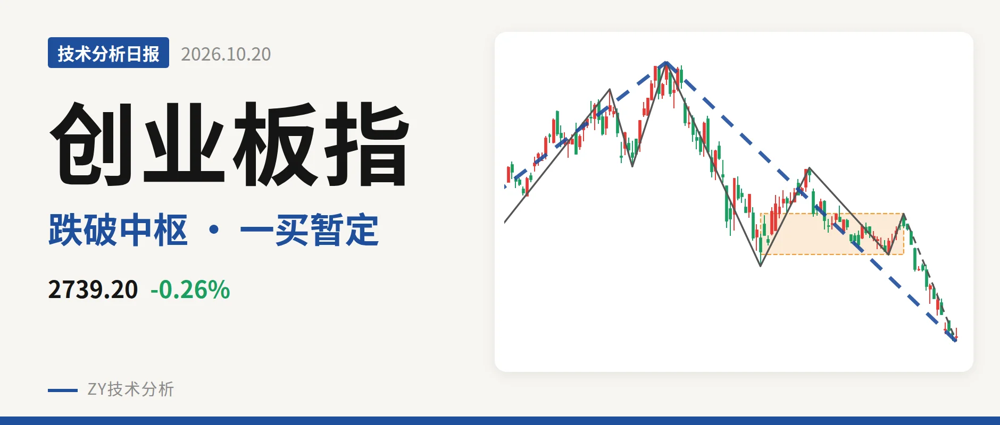
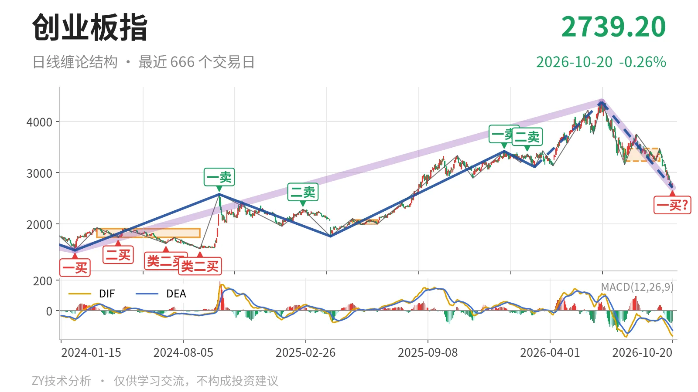
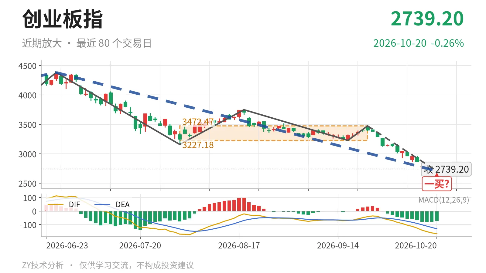

创业板指｜跌破中枢后现暂定一买2706点

最近日线中枢 3227.18—3472.47点，收盘位于中枢之下
一句话：跌破最近笔中枢下沿后现暂定一买，日线下跌段仍在延续
📉 走势结构：处6月25日以来下跌段中
当前从日线线段看，6月25日至10月20日的下跌线段还在延续，起于4380.41点，最新至2706.41点，跌约38.2%。更大级别上，2024年2月5日至2026年6月25日的上涨段没有被确认结束，但4380.41点之后的回落已吞掉3月9日至6月25日上涨段的大部分涨幅，因此当前不是中枢震荡，而是大级别上涨中的深度回落段。日线线段的反向破坏没有出现，下跌段继续主导。

🧭 中枢位置：跌破3227点下沿
最新价已跌破最近日线笔中枢下沿。该中枢为7月30日至9月22日的3227.18—3472.47点，中轴3349.83点，中枢尚未定型。最新收盘2739.20点低于下沿3227.18点约15.1%，属于向下离开该中枢。这个中枢之前，2025年5月14日至2025年6月23日的中枢中轴在2036.94点，因此整体中枢曾上移；但9月22日以来下跌笔跌破最近中枢下沿后，该中枢是否转入下移，要看后续反抽能否回到3227点上方。当前价格已落到中枢之下，短期结构由向上中枢转为向下离开段。
🛒 买卖点：2706点只是暂定一买
10月20日出现一买2706.41点，落在9月22日至10月20日下跌笔内，该笔还没有结束，因此这里只能看作暂定的一买，随笔继续走低会重写。其前方，1月13日一卖3416.84点、2月25日二卖3363.18点之后，3月9日至6月25日上涨段创出4380点新高，所以那两个卖点只对应日线笔级别，不是线段级别转折。线段级别3月9日三买3111.88点后曾涨至4380点，但当前价格已回到三买下方，三买后的上攻结构被深度回落破坏。

⚖️ 背驰：新低不新弱，笔未完成
比较仍在延续的9月22日至10月20日下跌笔与6月25日至7月30日下跌笔：价格低点从3158.14点下移至2706.41点，创了新低；但绿柱面积暂时为640，低于前者的1837；DIF低点-167.7仍高于前者的-171.1，未同步创新低，属于新低不新弱。不过当前下跌笔未完成，面积与DIF低点还会变化，这个背驰只能以还在延续的笔为准，不能当作已成立的转折。
🔎 关键位置：3227点得失决定结构强弱
后续结构含义只看位置。反抽若回不到3227点上方，结构上对最近日线笔中枢构成三卖，下跌段还会延续；若重新站上3349点中轴，则当前离开段更可能转为中枢扩展而非单边下移。下方暂定一买2706点若继续下破，背驰基础被破坏，需等待新的笔结构再判断。当前价格低于中枢下沿且MACD仍在零轴下，偏弱，弱在中枢下沿失守、反抽尚未出现。
⚠️ 本文为基于公开行情数据的缠论技术结构记录，由程序自动计算并生成，仅供学习交流，不构成任何投资建议。市场有风险，投资需谨慎。